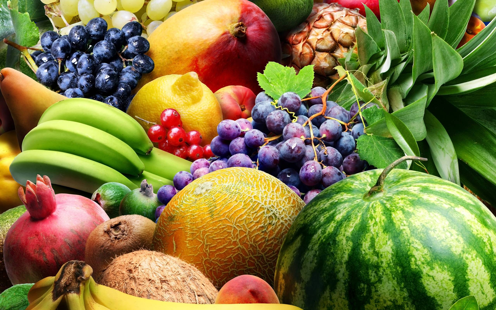

Why Choose Agenculture?

Fresh Organic Produce
Enjoy farm-fresh, organic fruits and vegetables directly from sustainable farms.

Eco-Friendly Practices
We prioritize sustainable farming methods to protect the environment.
Community Support
Join a growing community of farmers and consumers passionate about sustainability.